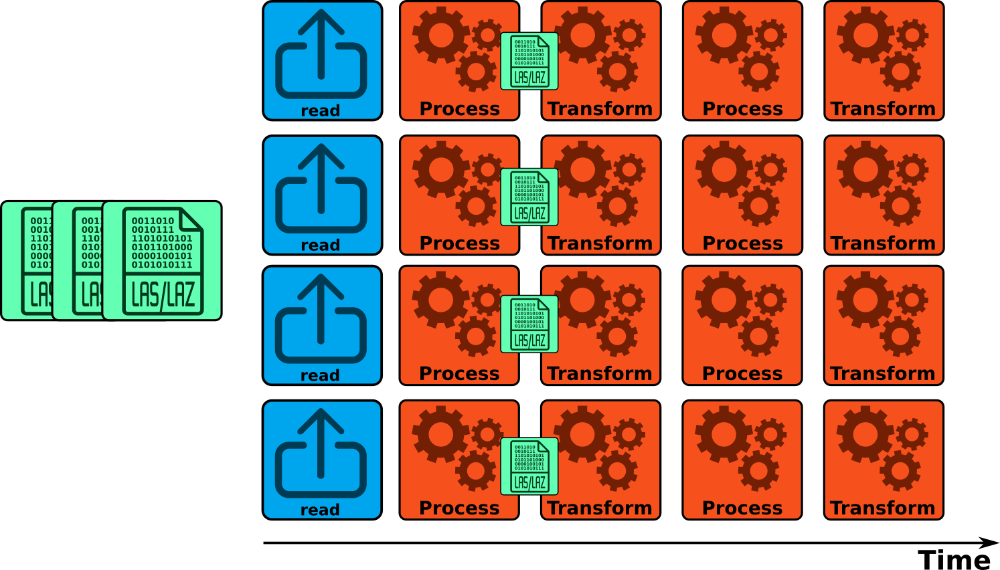

The multi-threading in lasR is pretty similar to
lidR, except it does not use the package
future. Everything is natively coded in C++ with
OpenMP. There are 4 different parallelization strategies
that can be assigned for a given task with
exec(pipeline, ncores = strategy_name(n)) or that can be
assigned globally for the entiere session with
set_parallel_strategy(strategy_name(n)).
lasRusesOpenMPwhich means that the package supports parallelism on Linux and Windows but not on macOS where Apple has explicitly disabledOpenMPsupport in compilers that they ship inXcode. Interested readers can read the following links: OpenMP on macOS; OpenBLAS and OpenMP on macOS ; Enable OpenMP for macOS
Sequential strategy
set_parallel_strategy(sequential())
# or
exec(pipeline, on = f, ncores = sequential())The sequential strategy is not the default strategy.
However, it is easier to start with this option to explain some
specificities of lasR. In sequential processing, as the
name indicates, the LAS/LAZ files are processed sequentially, and
nothing is parallelized. The point cloud from one file passes through
the pipeline while the other files are waiting to be processed. This is
represented in the figure below.

Concurrent points strategy
set_parallel_strategy(concurrent_points(4))
# or
exec(pipeline, on = f, ncores = concurrent_points(4))Concurrent points with half_cores() is the default
strategy. The LAS/LAZ files are processed sequentially. The point cloud
from one file passes through the pipeline while the other files are
waiting. Inside the pipeline, some stages are parallelized and are
processing the points in different threads. Each core processes a subset
of the point cloud. The stages that are parallelized are consequently
faster, but in practice, not a lot of stages can easily be parallelized
this way.

Concurrent files strategy
set_parallel_strategy(concurrent_files(4))
# or
exec(pipeline, on = f, ncores = concurrent_files(4))
# or
exec(pipeline, on = f, ncores = 4) # more convenientThe LAS/LAZ files are processed in parallel. The point cloud from several files passes through several cloned pipelines while the other files are waiting. Inside the pipeline, the stages are not parallelized. This puts a lot of pressure on the disk because many LAS/LAZ files are read simultaneously, but also each stage can write some raster/vector/LAS files simultaneously. Additionally, it uses a lot of memory since many LAS files are loaded in memory simultaneously. With modern and fast SSD disks and a significant amount of RAM, this is the fastest option. Of course, users should not use all their cores; otherwise, they may run out of memory. See also the benchmarks vignette.

Nested strategy
set_parallel_strategy(nested(4, 2))
# or
exec(pipeline, on = f, ncores = nested(4, 2))The LAS/LAZ files are processed in parallel. The point cloud from several files passes through several cloned pipelines while the other files are waiting. Inside the pipeline, some stages are also parallelized and are processing the points in different threads. Nested is reserved for experts only.

Special cases
In lasR, everything is written in pure C++ except for
two stages that inject user-defined R code and use the R C API (see R stages)
R is NOT multi-threaded, and thus calling these
stages in parallel is not thread-safe and will crash the R session in
the best case or deeply corrupt the R memory in the worst case.
Consequently, these stages are protected and pipelines involving these
stages cannot be ran in parallel with the concurrent-files
strategy.
Real timeline
In the figures above, the pipelines are represented in an idealized and simplified manner. For example, all stages are depicted as taking the same amount of time, and all the cores are shown running in parallel without any overhead. While this simplification aids understanding, it does not capture the full complexity of the actual process. The actual timeline of a real pipeline processing of 9 files is shown in the figure below.